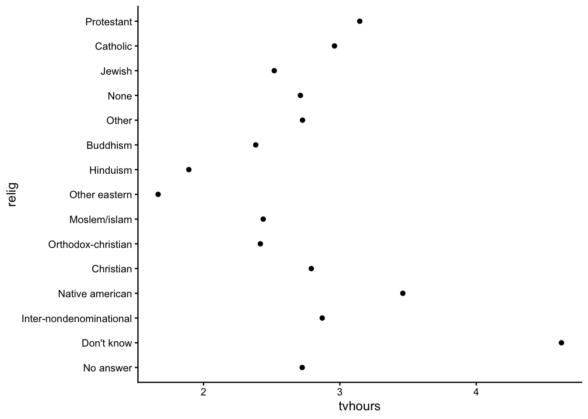
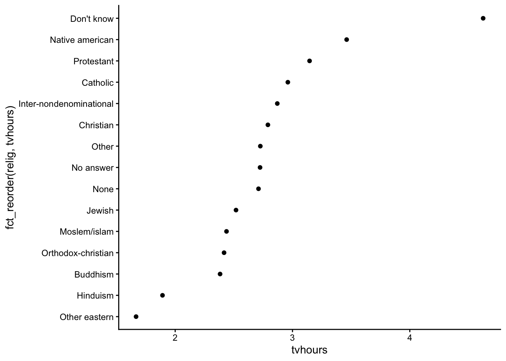
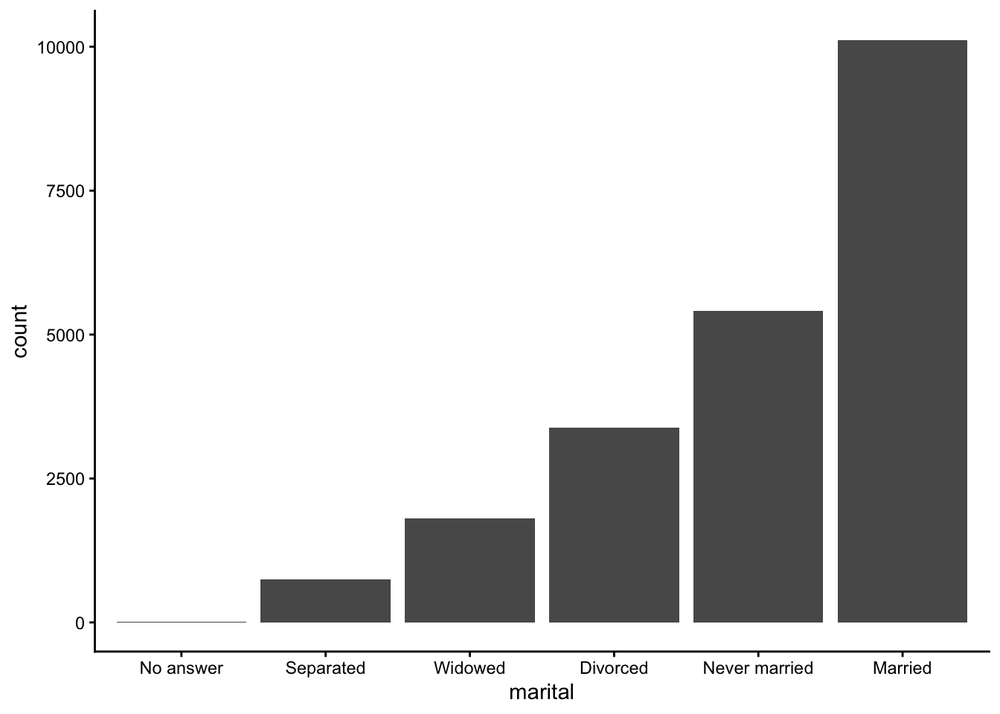

[1] "Fair" "Good" "Very Good" "Premium" "Ideal" [1] Ideal Premium Good Very Good Fair
Levels: Fair < Good < Very Good < Premium < IdealBy the end of this lesson, you should be able to:
lubridate packageforcats package to wrangle factor dataRStudio (Posit) maintains a collection of wonderful cheatsheets. The following will be helpful:
Data Wrangling Verbs (from Stat/Comp 112)
mutate(): creates/changes columns/elements in a data frame/tibbleselect(): keeps subset of columns/elements in a data frame/tibblefilter(): keeps subsets of rows in a data frame/tibblearrange(): sorts rows in a data frame/tibblegroup_by(): internally groups rows in data frame/tibble by values in 1 or more columsn/elementssummarize(): collapses/combines information across rows using functions such as n(), sum(), mean(), min(), max(), median(), sd()
count(): shortcut for group_by() |> summarize(n = n())
left_join(): mutating join of two data frames/tibbles keeping all rows in left data framefull_join(): mutating join of two data frames/tibbles keeping all rows in both data framesinner_join(): mutating join of two data frames/tibbles keeping rows in left data frame that find match in rightsemi_join(): filtering join of two data frames/tibbles keeping rows in left data frame that find match in rightanti_join(): filtering join of two data frames/tibbles keeping rows in left data frame that do not find match in rightpivot_wider(): rearrange values from two columns to many(one column becomes the names of new variables, one column becomes the values of the new variables)pivot_longer(): rearrange values from many columns to two (the names of the columns go to one new variable, the values of the columns go to a second new variable)An atomic vector is a storage container in R where all elements in the container are of the same type. The types that are relevant to data science are:
logical (also known as boolean)integernumeric floating point (also known as double)character stringDate and date-time (saved as POSIXct)factorFunction documentation will refer to vectors frequently.
See examples below:
ggplot2::scale_x_continuous()
breaks: A numeric vector of positionslabels: A character vector giving labels (must be same length as breaks)shiny::sliderInput()
value: The initial value of the slider […] A length one vector will create a regular slider; a length two vector will create a double-ended range slider.When you need a vector, you can create one manually using
c(): the combine functionOr you can create one based on available data using
dataset |> mutate(newvar = variable > 5) |> pull(newvar): taking one column out of a datasetdataset |> pull(variable) |> unique(): taking one column out of a dataset and finding unique valuesWhat does a logical vector look like?
You will often create logical vectors with comparison operators: >, <, <=, >=, ==, !=.
[1] TRUE FALSE FALSE FALSE[1] TRUE TRUE FALSE FALSE[1] FALSE FALSE FALSE TRUE[1] FALSE FALSE TRUE TRUE[1] FALSE FALSE FALSE TRUE[1] TRUE TRUE TRUE FALSEWhen you want to check for set containment, the %in% operator is the correct way to do this (as opposed to ==).
Warning in x == c(1, 2, 4): longer object length is not a multiple of shorter
object length[1] TRUE TRUE FALSE FALSE[1] TRUE TRUE FALSE TRUEThe Warning: longer object length is not a multiple of shorter object length is a manifestation of vector recycling.
In R, if two vectors are being combined or compared, the shorter one will be repeated to match the length of the longer one–even if longer object length isn’t a multiple of the shorter object length. We can see the exact recycling that happens below:
[1] TRUE TRUE FALSE FALSE[1] TRUE TRUE FALSE FALSELogical vectors can also be created with functions. is.na() is one useful example:
We can negate a logical object with !. We can combine logical objects with & (and) and | (or).
[1] FALSE TRUE TRUE FALSE[1] TRUE FALSE FALSE TRUE[1] TRUE FALSE FALSE TRUEWe can summarize logical vectors with:
any(): Are ANY of the values TRUE?all(): Are ALL of the values TRUE?sum(): How many of the values are TRUE?mean(): What fraction of the values are TRUE?[1] TRUE[1] TRUE[1] 1[1] 0.25if_else() and case_when() are functions that allow you to return values depending on the value of a logical vector. You’ll explore the documentation for these in the following exercises.
Load the diamonds dataset, and filter to the first 1000 diamonds.
Using tidyverse functions, complete the following:
==. Predict the warning message that you will receive.price by looking up the documentation for if_else() and case_when():
price_cat1: “low” if price is less than 500 and “high” otherwiseprice_cat2: “low” if price is less than 500, “medium” if price is between 500 and 1000 dollars inclusive, and “high” otherwise.# A tibble: 30 × 10
carat cut color clarity depth table price x y z
<dbl> <ord> <ord> <ord> <dbl> <dbl> <int> <dbl> <dbl> <dbl>
1 0.23 Ideal E SI2 61.5 55 326 3.95 3.98 2.43
2 0.21 Premium E SI1 59.8 61 326 3.89 3.84 2.31
3 0.23 Good E VS1 56.9 65 327 4.05 4.07 2.31
4 0.29 Premium I VS2 62.4 58 334 4.2 4.23 2.63
5 0.31 Good J SI2 63.3 58 335 4.34 4.35 2.75
6 0.24 Very Good J VVS2 62.8 57 336 3.94 3.96 2.48
7 0.24 Very Good I VVS1 62.3 57 336 3.95 3.98 2.47
8 0.26 Very Good H SI1 61.9 55 337 4.07 4.11 2.53
9 0.22 Fair E VS2 65.1 61 337 3.87 3.78 2.49
10 0.23 Very Good H VS1 59.4 61 338 4 4.05 2.39
# ℹ 20 more rows# A tibble: 90 × 10
carat cut color clarity depth table price x y z
<dbl> <ord> <ord> <ord> <dbl> <dbl> <int> <dbl> <dbl> <dbl>
1 0.35 Ideal I VS1 60.9 57 552 4.54 4.59 2.78
2 0.3 Premium D SI1 62.6 59 552 4.23 4.27 2.66
3 0.3 Ideal D SI1 62.5 57 552 4.29 4.32 2.69
4 0.3 Ideal D SI1 62.1 56 552 4.3 4.33 2.68
5 0.42 Premium I SI2 61.5 59 552 4.78 4.84 2.96
6 0.28 Ideal G VVS2 61.4 56 553 4.19 4.22 2.58
7 0.32 Ideal I VVS1 62 55.3 553 4.39 4.42 2.73
8 0.31 Very Good G SI1 63.3 57 553 4.33 4.3 2.73
9 0.31 Premium G SI1 61.8 58 553 4.35 4.32 2.68
10 0.24 Premium E VVS1 60.7 58 553 4.01 4.03 2.44
# ℹ 80 more rows# A tibble: 1 × 2
num_fpi frac_fpi
<int> <dbl>
1 685 0.685# A tibble: 1 × 1
high_any
<lgl>
1 FALSE # A tibble: 1 × 1
high_all
<lgl>
1 FALSE # A tibble: 1,000 × 12
carat cut color clarity depth table price x y z
<dbl> <ord> <ord> <ord> <dbl> <dbl> <int> <dbl> <dbl> <dbl>
1 0.23 Ideal E SI2 61.5 55 326 3.95 3.98 2.43
2 0.21 Premium E SI1 59.8 61 326 3.89 3.84 2.31
3 0.23 Good E VS1 56.9 65 327 4.05 4.07 2.31
4 0.29 Premium I VS2 62.4 58 334 4.2 4.23 2.63
5 0.31 Good J SI2 63.3 58 335 4.34 4.35 2.75
6 0.24 Very Good J VVS2 62.8 57 336 3.94 3.96 2.48
7 0.24 Very Good I VVS1 62.3 57 336 3.95 3.98 2.47
8 0.26 Very Good H SI1 61.9 55 337 4.07 4.11 2.53
9 0.22 Fair E VS2 65.1 61 337 3.87 3.78 2.49
10 0.23 Very Good H VS1 59.4 61 338 4 4.05 2.39
# ℹ 990 more rows
# ℹ 2 more variables: price_category_1 <chr>, price_category_2 <chr>Numerical data can be of class integer or numeric (representing real numbers).
[1] 1 2 3[1] "integer"[1] 1 2 3[1] "numeric"The Numbers chapter in R4DS covers the following functions that are all useful for wrangling numeric data:
n(), n_distinct(): Counting and counting the number of unique valuessum(is.na()): Counting the number of missing valuesmin(), max()
pmin(), pmax(): Get the min and max across several vectors%/%. Remainder: %%
121 %/% 100 = 1 and 121 %% 100 = 21
round(), floor(), ceiling(): Rounding functions (to a specified number of decimal places, to the largest integer below a number, to the smallest integer above a number)cut(): Cut a numerical vector into categoriescumsum(), cummean(), cummin(), cummax(): Cumulative functionsrank(): Provide the ranks of the numbers in a vectorlead(), lag(): shift a vector by padding with NAsmean, median, min, max, quantile, sd, IQR
na.rm argument that should be set to TRUE if you have missing data.Exercises will be on HW4.
The best way to add these functions and operators to your vocabulary is to need to recall them. Refer to the list of functions above as you try the exercises.
You will need to reference function documentation to look at arguments and look in the Examples section.
The lubridate package contains useful functions for working with dates and times. The lubridate function reference is a useful resource for finding the functions you need. We’ll take a brief tour of this reference page.
We’ll use the lakers dataset in the lubridate package to illustrate some examples.
# A tibble: 6 × 13
date opponent game_type time period etype team player result points type
<int> <chr> <chr> <chr> <int> <chr> <chr> <chr> <chr> <int> <chr>
1 2.01e7 POR home 12:00 1 jump… OFF "" "" 0 ""
2 2.01e7 POR home 11:39 1 shot LAL "Pau … "miss… 0 "hoo…
3 2.01e7 POR home 11:37 1 rebo… LAL "Vlad… "" 0 "off"
4 2.01e7 POR home 11:25 1 shot LAL "Dere… "miss… 0 "lay…
5 2.01e7 POR home 11:23 1 rebo… LAL "Pau … "" 0 "off"
6 2.01e7 POR home 11:22 1 shot LAL "Pau … "made" 2 "hoo…
# ℹ 2 more variables: x <int>, y <int>Below we use date-time parsing functions to represent the date and time variables with date-time classes:
Below we use extraction functions to get components of the date-time objects:
# A tibble: 34,624 × 6
year month day day_of_week minute second
<dbl> <dbl> <int> <ord> <dbl> <dbl>
1 2008 10 28 Tue 12 0
2 2008 10 28 Tue 11 39
3 2008 10 28 Tue 11 37
4 2008 10 28 Tue 11 25
5 2008 10 28 Tue 11 23
6 2008 10 28 Tue 11 22
7 2008 10 28 Tue 11 22
8 2008 10 28 Tue 11 22
9 2008 10 28 Tue 11 0
10 2008 10 28 Tue 10 53
# ℹ 34,614 more rows# A tibble: 34,624 × 5
# Groups: date, opponent, period [314]
date opponent time period diff_btw_plays_sec
<date> <chr> <Period> <int> <dbl>
1 2008-10-28 POR 12M 0S 1 NA
2 2008-10-28 POR 11M 39S 1 -21
3 2008-10-28 POR 11M 37S 1 -2
4 2008-10-28 POR 11M 25S 1 -12
5 2008-10-28 POR 11M 23S 1 -2
6 2008-10-28 POR 11M 22S 1 -1
7 2008-10-28 POR 11M 22S 1 0
8 2008-10-28 POR 11M 22S 1 0
9 2008-10-28 POR 11M 0S 1 -22
10 2008-10-28 POR 10M 53S 1 -7
# ℹ 34,614 more rowsExercises will be on HW4.
Creating factors
In R, factors are made up of two components: the actual values of the data and the possible levels within the factor. Creating a factor requires supplying both pieces of information.
However, if we were to sort this vector, R would sort this vector alphabetically.
We can fix this sorting by creating a factor version of months. The levels argument is a character vector that specifies the unique values that the factor can take. The order of the values in levels defines the sorting of the factor.
[1] Mar Dec Jan Apr Jul
Levels: Jan Feb Mar Apr May Jun Jul Aug Sep Oct Nov Dec[1] Jan Mar Apr Jul Dec
Levels: Jan Feb Mar Apr May Jun Jul Aug Sep Oct Nov DecWhat if we try to create a factor with values that aren’t in the levels? (e.g., a typo in a month name)
[1] <NA> Mar
Levels: Jan Feb Mar Apr May Jun Jul Aug Sep Oct Nov DecBecause the NA is introduced silently (without any error or warnings), this can be dangerous. It might be better to use the fct() function in the forcats package instead:
Reordering factors
We’ll use a subset of the General Social Survey (GSS) dataset available in the forcats pacakges.
# A tibble: 6 × 9
year marital age race rincome partyid relig denom tvhours
<int> <fct> <int> <fct> <fct> <fct> <fct> <fct> <int>
1 2000 Never married 26 White $8000 to 9999 Ind,near r… Prot… Sout… 12
2 2000 Divorced 48 White $8000 to 9999 Not str re… Prot… Bapt… NA
3 2000 Widowed 67 White Not applicable Independent Prot… No d… 2
4 2000 Never married 39 White Not applicable Ind,near r… Orth… Not … 4
5 2000 Divorced 25 White Not applicable Not str de… None Not … 1
6 2000 Married 25 White $20000 - 24999 Strong dem… Prot… Sout… NAReordering the levels of a factor can be useful in plotting when categories would benefit from being sorted in a particular way:

We can use fct_reorder() in forcats.
arrange() when sorting the rows of a data frame.)
For bar plots, we can use fct_infreq() to reorder levels from most to least common. This can be combined with fct_rev() to reverse the order (least to most common):


Modifying factor levels
We talked about reordering the levels of a factor–what about changing the values of the levels themselves?
For example, the names of the political parties in the GSS could use elaboration (“str” isn’t a great label for “strong”) and clean up:
# A tibble: 10 × 2
partyid n
<fct> <int>
1 No answer 154
2 Don't know 1
3 Other party 393
4 Strong republican 2314
5 Not str republican 3032
6 Ind,near rep 1791
7 Independent 4119
8 Ind,near dem 2499
9 Not str democrat 3690
10 Strong democrat 3490We can use fct_recode() on partyid with the new level names going on the left and the old levels on the right. Any levels that aren’t mentioned explicitly (i.e., “Don’t know” and “Other party”) will be left as is:
gss_cat |>
mutate(
partyid = fct_recode(partyid,
"Republican, strong" = "Strong republican",
"Republican, weak" = "Not str republican",
"Independent, near rep" = "Ind,near rep",
"Independent, near dem" = "Ind,near dem",
"Democrat, weak" = "Not str democrat",
"Democrat, strong" = "Strong democrat"
)
) |>
count(partyid)# A tibble: 10 × 2
partyid n
<fct> <int>
1 No answer 154
2 Don't know 1
3 Other party 393
4 Republican, strong 2314
5 Republican, weak 3032
6 Independent, near rep 1791
7 Independent 4119
8 Independent, near dem 2499
9 Democrat, weak 3690
10 Democrat, strong 3490To combine groups, we can assign multiple old levels to the same new level (“Other” maps to “No answer”, “Don’t know”, and “Other party”):
gss_cat |>
mutate(
partyid = fct_recode(partyid,
"Republican, strong" = "Strong republican",
"Republican, weak" = "Not str republican",
"Independent, near rep" = "Ind,near rep",
"Independent, near dem" = "Ind,near dem",
"Democrat, weak" = "Not str democrat",
"Democrat, strong" = "Strong democrat",
"Other" = "No answer",
"Other" = "Don't know",
"Other" = "Other party"
)
)# A tibble: 21,483 × 9
year marital age race rincome partyid relig denom tvhours
<int> <fct> <int> <fct> <fct> <fct> <fct> <fct> <int>
1 2000 Never married 26 White $8000 to 9999 Independe… Prot… Sout… 12
2 2000 Divorced 48 White $8000 to 9999 Republica… Prot… Bapt… NA
3 2000 Widowed 67 White Not applicable Independe… Prot… No d… 2
4 2000 Never married 39 White Not applicable Independe… Orth… Not … 4
5 2000 Divorced 25 White Not applicable Democrat,… None Not … 1
6 2000 Married 25 White $20000 - 24999 Democrat,… Prot… Sout… NA
7 2000 Never married 36 White $25000 or more Republica… Chri… Not … 3
8 2000 Divorced 44 White $7000 to 7999 Independe… Prot… Luth… NA
9 2000 Married 44 White $25000 or more Democrat,… Prot… Other 0
10 2000 Married 47 White $25000 or more Republica… Prot… Sout… 3
# ℹ 21,473 more rowsWe can use fct_collapse() to collapse many levels:
gss_cat |>
mutate(
partyid = fct_collapse(partyid,
"Other" = c("No answer", "Don't know", "Other party"),
"Republican" = c("Strong republican", "Not str republican"),
"Independent" = c("Ind,near rep", "Independent", "Ind,near dem"),
"Democrat" = c("Not str democrat", "Strong democrat")
)
) |>
count(partyid)# A tibble: 4 × 2
partyid n
<fct> <int>
1 Other 548
2 Republican 5346
3 Independent 8409
4 Democrat 7180[1] High Medium Low
Levels: Low Medium HighMore exercises will be on HW4.